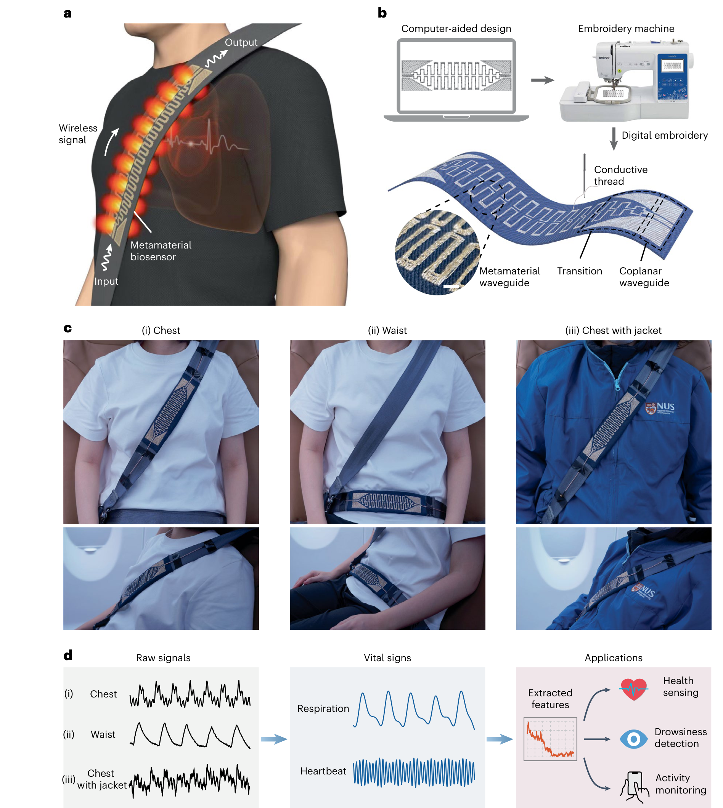
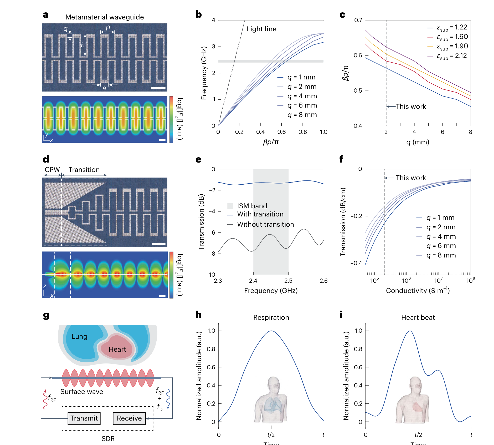
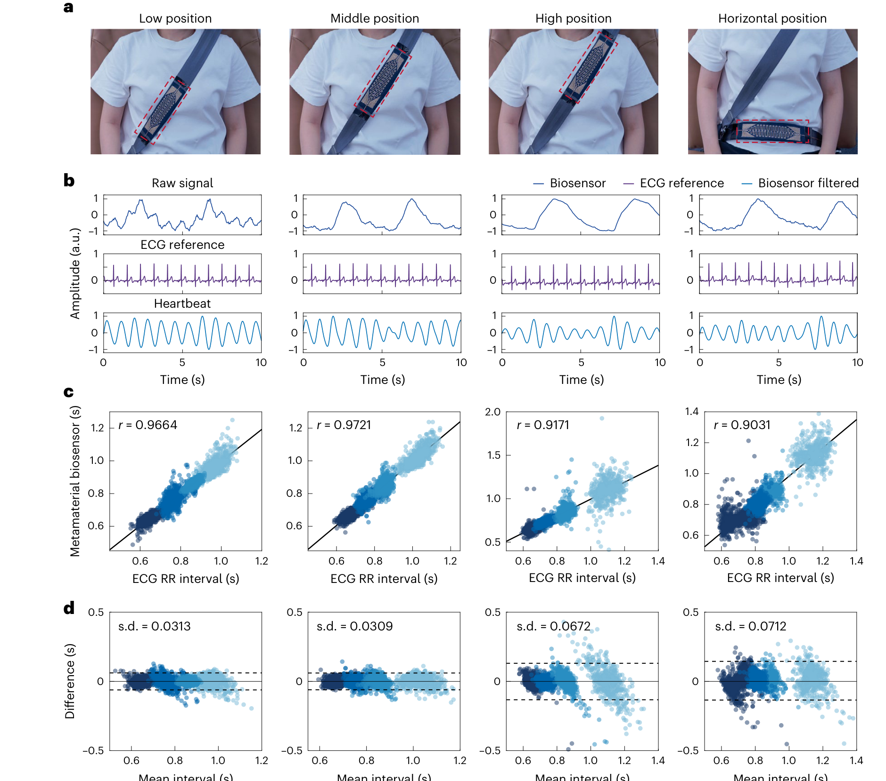
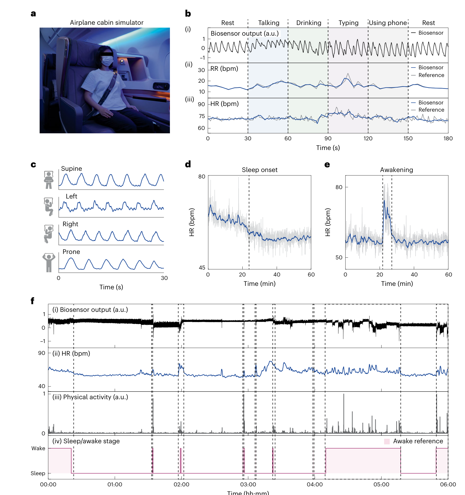
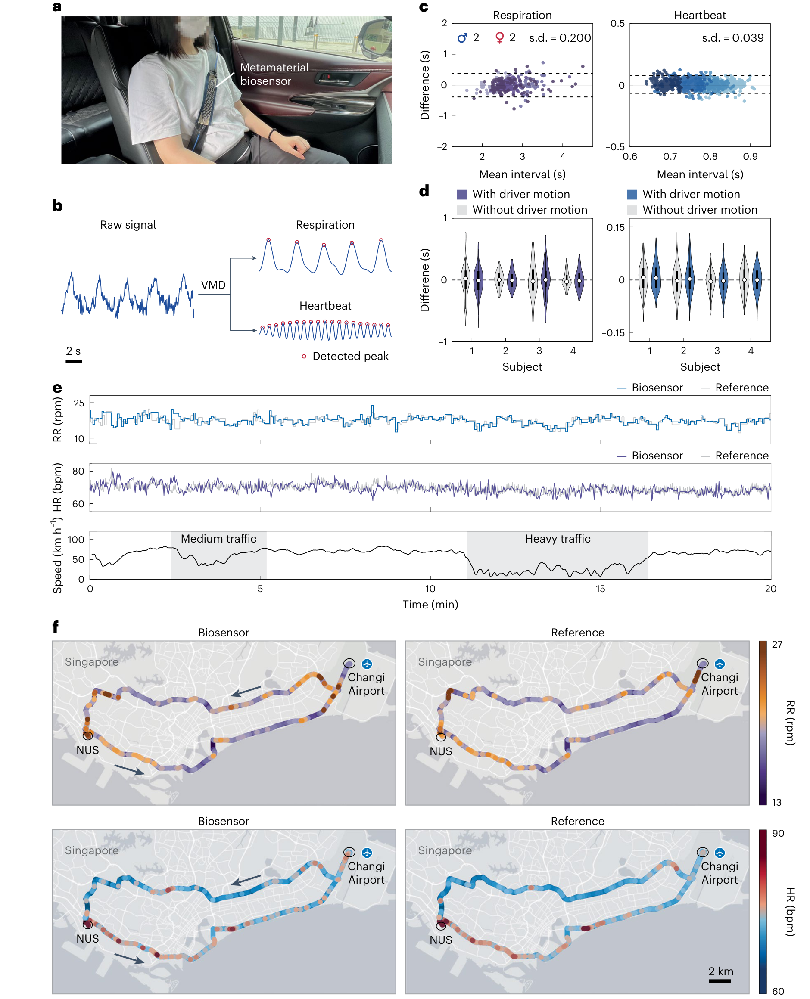

FIG. 1
系统概念：传感器不贴皮肤，但跟着安全带贴近身体
第一图把材料、制造、部署和输出串成一条链：导电线刺绣出波导，波沿胸带或腰带传播，呼吸与心搏引起的相位微扰再被算法抽取。

作者把导电线数字刺绣成 2.4 GHz 超材料波导，再嵌入飞机与汽车安全带。安全带随身体一起运动，波导则把无线场束缚在身体附近；呼吸和心跳改变组织边界与介电环境，最终被读成传播相位变化。它在 4 名健康受试者和单人连续实验中展示了很有说服力的工程可行性，但还不是经过大样本验证的疲劳、睡眠或医疗监测系统。
证据边界：图片截自用户提供的正式论文 PDF，仅发布用于研究解读的完整图体，不分发原始 PDF。本文的“非接触”指不需要电极贴肤；传感器仍固定在安全带上，并依赖安全带与胸腰部的近距离、共形机械耦合。
普通车载雷达把能量辐射到整个舱室，容易被车体振动、多径和其他乘员淹没。本文改走“贴着身体传”的路线：梳齿状刺绣波导支持人工表面等离激元（spoof surface plasmon, SSP）模式，把波长压缩到自由空间的约四分之一，并把场限制在安全带附近；SDR 再从回波相位中用变分模态分解（VMD）分离呼吸与心跳。最好的胸前放置下，逐搏间期与 ECG 的相关系数达到 0.9721、差值标准差约 30.9 ms；车辆运动场景约 39 ms。
第一图把材料、制造、部署和输出串成一条链：导电线刺绣出波导，波沿胸带或腰带传播，呼吸与心搏引起的相位微扰再被算法抽取。

论文真正的硬件新意不是“把天线缝在布上”，而是让周期梳齿支持受限 SSP 表面模，再在低填充率、传输损耗、不同织物和标准 50 Ω 接口之间做工程折中。

这张图是论文最干净的定量验证：同一系统分别放在四个安全带位置，与 ECG 逐搏间期对齐，并同时给出相关性和 Bland–Altman 一致性。

作者在飞机舱模拟器中把短时说话、喝水、打字、用手机，四种睡姿和一夜睡眠串起来；信号能持续工作，但最吸睛的睡眠结果来自单名女性参与者。

论文最后把波导嵌入汽车安全带：4 名参与者坐在副驾用假方向盘模仿驾驶动作，另有 1 名非驾驶乘客完成约 64 km 城市路线。信号与参考一致得相当好，但“困倦”只由心率下降推测。

方法补充：SDR 以 2.4 GHz 连续波工作，10 kHz 基带按 1 MHz 采样；相位先经 0.1–5 Hz 带通，再做多层 VMD 与峰值检测。4 人放置实验每位置每人 10 min；车辆模仿驾驶条件每人每次 2.5 min。论文提供 source data，分析代码需向通讯作者索取。
← 返回论文细读书架